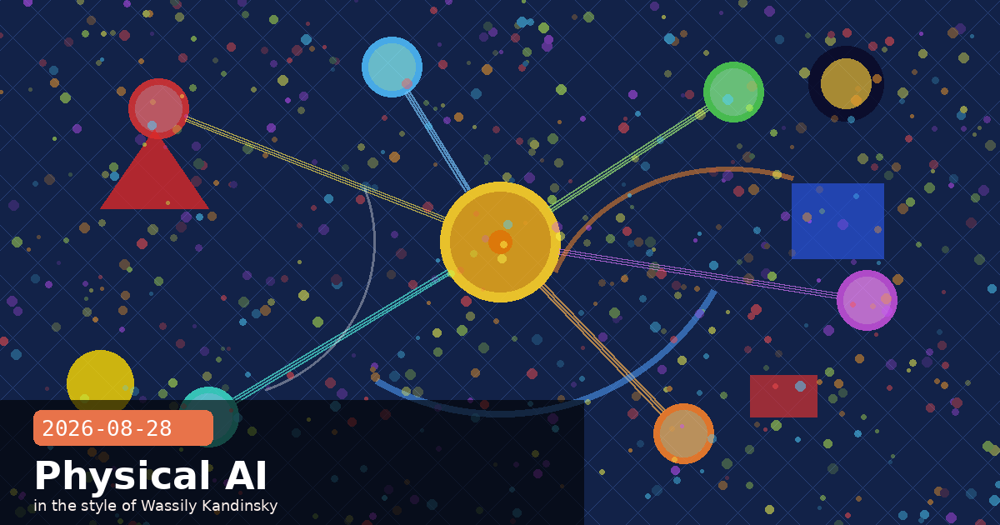

Model Hardware Standard Preview, 10K Science Seats, and Claude Code v2.1.248

🧭 Claude Code v2.1.248 + v2.1.250: Restricted Mode, Per-Agent Cache TTL, and Cloud Cross-Session Messaging
Claude Code v2.1.248 (released August 27 at 22:12 UTC) is one of the larger feature drops of the month, followed within hours by a v2.1.250 reliability patch (August 28, 00:49 UTC). The headline additions are a new locked-down deployment mode, per-agent prompt-cache TTL controls, and cross-session messaging finally available on all three major cloud providers.
--restricted mode: a clean sandbox surface for untrusted contexts
The new --restricted flag (or CLAUDE_CODE_RESTRICTED=1 environment variable) removes all tools that execute commands or code, disables WebFetch, confines file tools to the working directory, and refuses bypassPermissions and any user/project settings overrides. The result is a well-defined, auditable tool surface for deployments where Claude should read and modify files but never run shell commands or make outbound HTTP calls.
When to use --restricted
Pass --restricted when spawning subagents that process untrusted codebases, when integrating Claude Code into CI environments where command execution must route through an explicit approval layer, or when building customer-facing features where you want to guarantee Claude cannot execute arbitrary system commands regardless of what appears in the conversation. Pairing it with a narrow MCP server that exposes only the tools your use case needs gives you the tightest possible permission boundary without writing a custom harness.
experimental.cacheTtl — per-agent prompt cache control
Agents can now declare experimental.cacheTtl in their frontmatter ("5m" or "1h") to control how long their system-prompt prefix stays in Anthropic's prompt cache. The use case: an agent whose system prompt changes slowly (documentation context, a fixed tool list) can declare "1h" to keep the prefix warm across many calls, cutting costs significantly on high-frequency invocations without any changes to the calling code.
# agent frontmatter example
model: claude-sonnet-5
experimental:
cacheTtl: "1h"
system: |
You are a code-review agent. You have access to the following tools:
…
Cross-session messaging on Bedrock, Vertex, and Foundry
The SendMessage / ListAgents cross-session tools, previously limited to direct API connections, now work on AWS Bedrock, Google Vertex AI, and Azure AI Foundry. Multi-agent pipelines running on cloud providers can now pass structured messages between sessions without polling an external queue, a shared file system, or a bespoke message broker.
Server-managed settings diagnostics
If Claude Code fails to load organisation or project settings from the server at startup, it now displays a startup warning and surfaces the failure via /doctor and /status. Previously, these failures were silent — policy settings would silently not apply, with no way to diagnose why.
/usage-credits for Enterprise AWS Marketplace accounts
Enterprise organisations billing through AWS Marketplace can now run /usage-credits at the session prompt to check remaining purchased credits without leaving the terminal.
Notable bug fixes in v2.1.248
Prompt-cache miss ~hourly — OAuth token refresh was forcing tool definitions to re-render, invalidating the prompt cache prefix roughly once per hour in long sessions. Fixed.
Sessions disappearing from Claude Desktop after 30 days — Fixed.
Windows claude agents keyboard responsiveness — Fixed.
Claude Codereleaserestricted modeprompt cachingcross-sessionBedrock
🧭 Model Hardware Standard: Anthropic's Research Preview Brings AI Agents into Physical Labs
Anthropic opened a research preview of the Model Hardware Standard (MHS) on August 27 — a shared specification that lets AI agents safely operate physical laboratory and manufacturing equipment through the Model Context Protocol. It is Anthropic's first formal move into the physical-world AI space, and the first attempt to standardise how AI agents communicate with instruments that exist outside a computer.
The core idea: standardised drivers for physical devices
MHS defines drivers that translate between an operating system and a physical device using two simple primitives: read (retrieve data from a device) and write (send a command). Drivers contain natural-language tags describing device characteristics, safety limits, and operational parameters — tags that agents can read directly rather than relying on a bespoke "translator" program written for each piece of hardware.
Agents access devices through three paths: MCP servers (the primary route), CLIs, and code-based APIs. Because the standard is model-agnostic, any agent harness that speaks MCP can connect to any MHS-compatible device.
What hardware does it support?
Any device with a programmable interface: liquid handlers, robotic arms, microscopes, plate readers, lasers, cameras, and specialised research equipment across biotech, robotics, quantum computing, and advanced manufacturing.
Why the integration bottleneck mattered
Before MHS, connecting a new device to an autonomous pipeline required writing a custom integration — typically 3–8 weeks per device. Few devices communicated with each other, meaning a lab with ten instruments might require ten separate integrations. MHS reduces that to hours. More practically, autonomous agents can now orchestrate multiple instruments in parallel, running round-the-clock experiments that previously required constant human hand-offs between equipment.
Safety design
Device-level safety limits are embedded in the driver spec. An agent cannot issue a command that exceeds the device's rated parameters — e.g., it cannot set a laser to unsafe power levels even if instructed to. Human oversight hooks are preserved for critical decisions, and the standard is designed to make out-of-bounds commands structurally impossible rather than relying on model-level refusal.
Early research partners
Genentech — protein assays
University of Washington — microscopy workflows
Carnegie Mellon University — robotic dose-response experiments
After the research preview concludes, Anthropic plans to open-source the standard so any hardware vendor or research institution can build compatible drivers without a commercial agreement.
Model Hardware StandardMHSphysical AIMCPscientific researchrobotics
🧭 Anthropic Opens 10,000 Free Scientist Seats and Expands AI-for-Science Credits to All Fields
Anthropic announced a significant expansion of its academic access programme, opening 10,000 seats for scientists at academic and nonprofit research institutions. The move extends the AI for Science initiative beyond biology and chemistry to cover compute-intensive research in any scientific discipline.
Who qualifies and what they get
Principal investigators (or equivalent roles) at academic or nonprofit institutions are eligible. Verified PIs receive a free Team-tier seat for one year; their research teams receive Standard or Premium seats at $15/month (5× standard usage limits).
Expanded AI for Science credits
The AI for Science credits programme now covers "researchers in other scientific fields… including those working on ambitious, compute-heavy research" — a broadening from the previous biology/chemistry focus. Research projects can receive up to $50,000 in API credits per project.
Model access tiers for scientists
Biology and chemistry researchers remain limited to Opus-class models while Anthropic works with U.S. government partners on broader access controls for life sciences work. Researchers in other fields have access to the full model range. The tier distinction reflects ongoing discussions about appropriate safeguards for dual-use biology research rather than capability limitations — Opus-class models are still Anthropic's most capable general-purpose models.
Context: the scientific AI moment
The announcement pairs with the Model Hardware Standard preview (above) to signal a coherent push into scientific infrastructure. The combination — cloud access for computation plus physical-world control for lab instruments — addresses the two largest friction points for labs trying to run autonomous research pipelines: API cost/access barriers and hardware integration complexity.